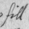

It, hell. She had Those.
— Dorothy Parker (1893–1967), reviewing the romantic novel ‘It’
 Before embarking on a new language definition file, the translator may want to consider what compromises are worth making, omitting tricky but not really necessary features of the language. For instance, in German, adjectives take forms agreeing with whether their noun takes a definite or indefinite article:
ein großer Mann a tall man (German)
der große Mann the tall man
This is an essential. But German also has a “neutral” form for adjectives, used in sentences like
Der Mann ist groß The man is tall
Now it could be argued that if the parser asks the German equivalent of
Whom do you mean, the tall man or the short man?
then the player ought to be able to reply “groß”. But this is probably not worth the effort.
As another example from German, is it essential for the parser to recognise commands put in the polite form when addressed to somebody other than the player? For instance,
freddy, öffne den ofen
Freddy, open the oven
herr krüger, öffnen sie den ofen
Mr Krueger, open the oven
indicate that Freddy is a friend but Mr Krueger a mere acquaintance. A translator might go to the trouble of implementing this, but equally might not bother, and simply tell players always to use the familiar form. It's harder to avoid the issue of whether the computer is familiar to the player. Does the player address the computer or the main character of the game? In English it makes no difference, but there are languages where an imperative verb agrees with the gender of the person being addressed. Is the computer male? Is it still male if the game's main character is female?
Another choice is whether to require the player to use letters other than ‘a’ to ‘z’ from the keyboard. French readers are used to seeing words written in capital letters without accents, so that there is no need to make the player type accents. In Finnish, though, ‘ä’ and ‘ö’ are significantly different from ‘a’ and ‘o’: “vaara” means “danger”, but “väärä” means “wrong”.
Finally, there are also dialect forms. The number 80 is “quatre-vingt” in metropolitan French, “octante” in Belgian and “huitante” in Swiss French. In such cases, the translator may want to write the language definition file to cope with all possible dialects. For example, something like
#ifdef DIALECT_FRANCOPHONE; print "septante"; #ifnot; print "soixante-dix"; #endif;
would enable the same definition file to be used by
Belgian authors and members of the Académie française
alike. The standard "English.h" definition
already has such a constant: DIALECT_US, which uses American
spellings, so that if an Inform game defines
Constant DIALECT_US;
before including Parser, then (for
example) the number 106 would be printed in words as “one
hundred six” instead of “one hundred and six”.
▲
An alternative is to allow the player to change dialect during play,
and to encode all spelling variations inside variable strings. Ralf
Herrmann's "German.h" does this to allow the
player to choose traditional, reformed or Swiss German conventions on
the use of “ß”. The low string variables @30 and @31
each hold either “ss” or “ß” for use
in words like "schlie@30t" and "mu@31t".
· · · · ·
A language definition file is itself written in Inform, and fairly readable Inform at that: you may want to have a copy of "English.h" to refer to while reading the rest of this section. This is divided into four parts:
It is helpful for all language definitions to follow the order and layout style of "English.h". The example used throughout the rest of the section is of developing a definition of "French.h".
The file should begin as follows:
! ===========================================================
! Inform Library Definition File: French
!
! (c) Angela M. Horns 1996
! -----------------------------------------------------------
System_file;
! -----------------------------------------------------------
! Part I. Preliminaries
! -----------------------------------------------------------
Constant LanguageVersion
= "Traduction fran@ccais 961205 par Angela M. Horns";
("English.h" defines a constant called
EnglishNaturalLanguage here, but this is just to help
the library keep old code working with the new parser: don't define a
similar constant yourself.) Note the c-cedilla written using escape
characters, @cc not ç, which is a precaution
to make absolutely certain that the file will be legible on anyone's
system, even one whose character set doesn't have accented characters
in the normal way.
The next ingredient of Part I is declaring the accented letters which need to be “cheap” in the following sense. Inside story files, dictionary words are stored to a “resolution” of nine Z-characters: that is, only the first nine Z-characters are looked at, so that
“chrysanthemum” is stored as
'chrysanth'
“chrysanthemums” is stored as
'chrysanth'
(This is one of the reasons why Informese doesn't make linguistic use of word-endings.) Normally no problem, but unfortunately Z-characters are not the same as letters. The letters ‘A’ to ‘Z’ are “cheap” and take only one Z-character each, but accented letters like ‘é’ normally take out four Z-characters. If your translation is going to ask the player to type accented letters at the keyboard (which even a French translation need not do: see above), the resolution may be unacceptably low:
“télécarte”
is stored as 't@'el'
“téléphone” is stored as 't@'el'
as there are not even enough of the nine Z-characters left to encode the second ‘é’, let alone the ‘c’ or the ‘p’ which would distinguish the two words. Inform therefore provides a mechanism to make up to about 10 common accents cheaper to use, in that they then take only two Z-characters each, not four. In the case of French, we might write:
Zcharacter '@'e'; ! E-acute Zcharacter '@`e'; ! E-grave Zcharacter '@`a'; ! A-grave Zcharacter '@`u'; ! U-grave Zcharacter '@^a'; ! A-circumflex Zcharacter '@^e'; ! E-circumflex
(Note that since the Z-machine automatically reduces anything the player types into lower case, we need only include lower-case accented letters here. Note also that there are plenty of other French accented letters (ï, û and so forth) but these are uncommon enough not to matter here.) With this change made,
“télécarte”
is stored as 't@'el@'ecar'
“téléphone” is stored as
't@'el@'epho'
enabling a phone card and a phone to be correctly distinguished by the parser.
▲▲
In any story file, 78 of the characters in the ZSCII set are designated
as “cheap” by being placed into what's called the “alphabet
table”. One of these is mandatorily new-line, another is mandatorily
double-quote and a third cannot be used, leaving 75. Zcharacter
moves a ZSCII character into the alphabet table, throwing out a character
which hasn't yet been used to make way. Alternatively, and provided
no characters have so far been used at all, you can write a
Zcharacter directive which sets the entire alphabet table.
The form required is to give three strings containing 26, 26 and 23
ZSCII characters respectively. For instance:
Zcharacter "abcdefghijklmnopqrstuvwxyz"
"ABCDEFGHIJKLMNOPQRSTUVWXYZ"
"0123456789!$&*():;.,<>@{386}";
Characters in alphabet 1, the top row, take only one
Z-character to print; characters in alphabets 2 and 3 take two Z-characters
to print; characters not in the table take four. Note that this assumes
that Unicode $0386 (Greek capital Alpha with tonos accent,
as it happens) is present in ZSCII. Ordinarily it would not be, but
the block of ZSCII character codes between 155 and 251 is configurable
and can in principle contain any Unicode characters of your choice.
By default, if Inform reads ISO 8859-n (switch setting -Cn)
then this block is set up to contain all the non-ASCII letter characters
in ISO 8859-n. In the most common case, -C1 for
ISO Latin-1, the ligatures ‘œ’ and ‘Œ’
are then added, but this still leaves 28 character codes vacant.
Zcharacter table + '@{9a}';
adds Unicode character $009a, a copyright
symbol, to ZSCII. Alternatively, you can instruct Inform to throw
away all non-standard ZSCII characters and replace them with a fresh
stock. The effect of:
Zcharacter table '@{9a}' '@{386}' '@^a';
is that ZSCII 155 will be a copyright symbol, 156 will
be a Greek capital alpha with tonos, 157 will be an a-circumflex
and 158 to 251 will be undefined; and all other accented letters
will be unavailable. Such Zcharacter directives must
be made before the characters in question are first used in game
text. You don't need to know the ZSCII values, anyway: you can always
write @{9a} when you want a copyright symbol.
All that is left in Part I is to declare standard compass directions. The corresponding part of "English.h", given below, should be imitated as closely as possible:
Class CompassDirection
with article "the", number
has scenery;
Object Compass "compass" has concealed;
Ifndef WITHOUT_DIRECTIONS;
CompassDirection -> n_obj "north wall"
with name 'n//' 'north' 'wall', door_dir n_to;
CompassDirection -> s_obj "south wall"
with name 's//' 'south' 'wall', door_dir s_to;
CompassDirection -> e_obj "east wall"
with name 'e//' 'east' 'wall', door_dir e_to;
CompassDirection -> w_obj "west wall"
with name 'w//' 'west' 'wall', door_dir w_to;
CompassDirection -> ne_obj "northeast wall"
with name 'ne' 'northeast' 'wall', door_dir ne_to;
CompassDirection -> nw_obj "northwest wall"
with name 'nw' 'northwest' 'wall', door_dir nw_to;
CompassDirection -> se_obj "southeast wall"
with name 'se' 'southeast' 'wall', door_dir se_to;
CompassDirection -> sw_obj "southwest wall"
with name 'sw' 'southwest' 'wall', door_dir sw_to;
CompassDirection -> u_obj "ceiling"
with name 'u//' 'up' 'ceiling', door_dir u_to;
CompassDirection -> d_obj "floor"
with name 'd//' 'down' 'floor', door_dir d_to;
Endif;
CompassDirection -> out_obj "outside"
with door_dir out_to;
CompassDirection -> in_obj "inside"
with door_dir in_to;
For example, "French.h" would contain:
Class CompassDirection
with article "le", number
has scenery;
Object Compass "compas" has concealed;
...
CompassDirection -> n_obj "mur nord"
with name 'n//' 'nord' 'mur', door_dir n_to;
This is where small grammatical categories like ‹again-word› are defined. The following constants must be defined:
AGAIN*__WD | words of type ‹again-word› |
UNDO*__WD | words of type ‹undo-word› |
OOPS*__WD | words of type ‹oops-word› |
THEN*__WD | words of type ‹then-word› |
AND*__WD | words of type ‹and-word› |
BUT*__WD | words of type ‹but-word› |
ALL*__WD | words of type ‹all-word› |
OTHER*__WD | words of type ‹other-word› |
ME*__WD | words of type ‹me-word› |
OF*__WD | words of type ‹of-word› |
YES*__WD | words of type ‹yes-word› |
NO*__WD | words of type ‹no-word› |
In each case * runs from 1 to 3,
except for ALL*__WD where it runs 1 to 5 and OF*__WD
where it runs 1 to 4. ‹of-words› have
not been mentioned before: these are used in the sense of “three
of the boxes”, when parsing a reference to a given number of
things. They are redundant in English because the player could have typed
simply “three boxes”, but Inform provides them anyway.
In French, we might begin with:
Constant AGAIN1__WD = 'encore'; Constant AGAIN2__WD = 'c//'; Constant AGAIN3__WD = 'encore';
Here we can't actually think of a third synonymous word for “again”, but we must define AGAIN3__WD all the same, and must not allow it to be zero. And so on, through to:
Constant YES1__WD = 'o//'; Constant YES2__WD = 'oui'; Constant YES3__WD = 'oui';
‹yes-words› and ‹no-words› are used to parse the answers to yes-or-no questions (oui-ou-non questions in French, of course). It causes no difficulty that the word “o” is also an abbreviation for “ouest” because they are used in different contexts. On the other hand, ‹oops-words›, ‹again-words› and ‹undo-words› should be different from any verb or compass direction name.
After the above, a few further words have to be defined as possible replies to the question asked when a game ends. Here the French example might be:
Constant AMUSING__WD = 'amusant'; Constant FULLSCORE1__WD = 'grandscore'; Constant FULLSCORE2__WD = 'grand'; Constant QUIT1__WD = 'a//'; Constant QUIT2__WD = 'arret'; Constant RESTART__WD = 'reprand'; Constant RESTORE__WD = 'restitue';
Part II continues with a table of pronouns, best explained by example. The following table defines the standard English accusative pronouns:
Array LanguagePronouns table
! word possible GNAs: connected to:
! a i
! s p s p
! mfnmfnmfnmfn
'it' $$001000111000 NULL
'him' $$100000100000 NULL
'her' $$010000010000 NULL
'them' $$000111000111 NULL;
The “connected to” column should always
be created with NULL entries. The pattern of 1 and 0
in the middle column indicates which types of
‹noun phrase› might be referred
to with the given ‹pronoun›.
This is really a concise way of expressing a set of possible GNA
values, saying for instance that “them” can match against
noun phrases with any GNA in the set {3, 4, 5, 9, 10, 11}.
The accusative and dative pronouns in English are identical: for instance “her” in “give her the flowers” is dative and in “kiss her” is accusative. French is richer in pronoun forms:
donne-le-lui give it to him/her
mange avec lui eat with him
Here “-lui” and “lui” are grammatically quite different, with one implying masculinity where the other doesn't. The table needed is:
Array LanguagePronouns table ! word possible GNAs: connected to: ! a i ! s p s p ! mfnmfnmfnmfn '-le' $$100000100000 NULL '-la' $$010000010000 NULL '-les' $$000110000110 NULL '-lui' $$110000110000 NULL '-leur' $$000110000110 NULL 'lui' $$100000100000 NULL 'elle' $$010000010000 NULL 'eux' $$000100000100 NULL 'elles' $$000010000010 NULL;
This table assumes that “-le” can be treated as a free-standing word in its own right, not as part of the word “donne-le-lui”, and section (III.1) below will describe how to bring this about. Note that “-les” and “-leur” are treated as synonymous: Informese doesn't (ordinarily) care that dative and accusative are different.
Using the “pronouns” verb in any game will print out current values, which may be useful when debugging the above table. Here is the same game position, inside the building at the end of the road, in parallel English, German and Spanish text:
English: ‘Advent’
At the moment, “it” means the small bottle, “him”
is unset, “her” is unset and “them” is unset.
German: ‘Abenteuer’
Im Augenblick, “er” heisst der Schlüsselbund,
“sie” heisst die Flasche, “es” heisst das
Essen, “ihn” heisst der Schlüsselbund, “ihm”
heisst das Essen und “ihnen” ist nicht gesetzt.
Spanish: ‘Aventura’
En este momento, “-lo” significa el grupo de llaves,
“-los” no está definido, “-la”
significa la pequeña botella, “-las” significa
las par de tuberí as de unos 15 cm de diámetro,
“-le” significa la pequeña botella, “-les”
significa las par de tuberí as de unos 15 cm de diámetro,
“él” significa el grupo de llaves, “ella”
significa la pequeña botella, “ellos” no está
definido y “ellas” significa las par de tuberí
as de unos 15 cm de diámetro.
Part II continues with a table of descriptors, in a similar format.
Array LanguageDescriptors table ! word possible GNAs descriptor connected ! to follow: type: to: ! a i ! s p s p ! mfnmfnmfnmfn 'my' $$111111111111 POSSESS_PK 0 'this' $$111000111000 POSSESS_PK 0 'these' $$000111000111 POSSESS_PK 0 'that' $$111111111111 POSSESS_PK 1 'those' $$000111000111 POSSESS_PK 1 'his' $$111111111111 POSSESS_PK 'him' 'her' $$111111111111 POSSESS_PK 'her' 'their' $$111111111111 POSSESS_PK 'them' 'its' $$111111111111 POSSESS_PK 'it' 'the' $$111111111111 DEFART_PK NULL 'a//' $$111000111000 INDEFART_PK NULL 'an' $$111000111000 INDEFART_PK NULL 'some' $$000111000111 INDEFART_PK NULL;
This gives three of the four types of
‹descriptor›. The constant
POSSESS_PK signifies a ‹possessive adjective›,
connected either to 0, meaning the player-object, or to 1, meaning
anything other than the player-object (used for “that”
and similar words) or to the object referred to by the given
‹pronoun›, which must be one
of those in the pronoun table. DEFART_PK signifies a
definite ‹article› and
INDEFART_PK an indefinite ‹article›:
these should both give the connected-to value of NULL
in all cases.
The fourth kind allows extra descriptors to be added which force the objects that follow to have, or not have, a given attribute. For example, the following three lines would implement “lit”, “lighted” and “unlit” as adjectives automatically understood by the English parser:
'lit' $$111111111111 light NULL
'lighted' $$111111111111 light NULL
'unlit' $$111111111111 (-light) NULL
An attribute name means “must have this attribute”, while the negation of it means “must not have this attribute”.
To continue the example, "French.h" needs the following descriptors table:
Array LanguageDescriptors table
! word possible GNAs descriptor connected
! to follow: type: to:
! a i
! s p s p
! mfnmfnmfnmfn
'le' $$100000100000 DEFART_PK NULL
'la' $$010000010000 DEFART_PK NULL
'l^' $$110000110000 DEFART_PK NULL
'les' $$000110000110 DEFART_PK NULL
'un' $$100000100000 INDEFART_PK NULL
'une' $$010000010000 INDEFART_PK NULL
'des' $$000110000110 INDEFART_PK NULL
'mon' $$100000100000 POSSESS_PK 0
'ma' $$010000010000 POSSESS_PK 0
'mes' $$000110000110 POSSESS_PK 0
'son' $$100000100000 POSSESS_PK '-lui'
'sa' $$010000010000 POSSESS_PK '-lui'
'ses' $$000110000110 POSSESS_PK '-lui'
'leur' $$110000110000 POSSESS_PK '-les'
'leurs' $$000110000110 POSSESS_PK '-les';
(recall that in dictionary words, the apostrophe is
written ^). Thus, “son oiseau” means “his
bird” or “her bird”, according to the current meaning
of “-lui”, i.e., according to the gender of the most
recent singular noun referred to.
The parser automatically tries both meanings if the same word occurs in both pronoun and descriptor tables. This happens in English, where “her” can mean either a feminine singular possessive adjective (“take her purse”) or a feminine singular object pronoun (“wake her up”).
An array should be given of words having type ‹number›. These should include enough to express the numbers 1 to 20, as in the example:
Array LanguageNumbers table
'un' 1 'une' 1 'deux' 2 'trois' 3 'quatre' 4 'cinq' 5
'six' 6 'sept' 7 'huit' 8 'neuf' 9 'dix' 10
'onze' 11 'douze' 12 'treize' 13 'quatorze' 14 'quinze' 15
'seize' 16 'dix-sept' 17 'dix-huit' 18 'dix-neuf' 19 'vingt' 20;
In some languages, such as Russian, there are numbers larger than 1 which inflect with gender: please recognise all possibilities here. If the same word appears in both numbers and descriptors tables, its meaning as a descriptor takes priority, which is useful in French as it means that the genders of “un” and “une” are recognised after all.
Part III holds the routine to convert what the player has typed into Informese. In "English.h" this does nothing at all:
[ LanguageToInformese; ];
This might just do for Dogg, the imaginary language in
which Tom Stoppard's play Dogg's Hamlet is written, where the
words are more or less English words rearranged. (It begins with someone
tapping a microphone and saying “Breakfast, breakfast…
sun, dock, trog…”, and “Bicycles!” is an
expletive.) Other languages are structurally unlike
English and the task of LanguageToInformese is to rearrange or rewrite
commands to make them look more like English ones. Here are some typical
procedures for LanguageToInformese to follow:
ue and so
forth, and replacing ß with ss. This saves having
to recognise both spelling forms.donne-lui l'oiseau give the bird to him → donne -lui l' oiseau
della of the (Italian) → di la
cogela take it (Spanish) → coge la
dessus on top of it (French) → sur lui
dedans inside it → dans lui
arma virumque arms and the man (Latin)
→ arma et virum
kakane the cakes (Norwegian) → ne kake
When the call to LanguageToInformese
is made, the text that the player typed is held in a ->
array called buffer, and some useful information about it
is held in another array called parse. The contents of
these arrays are described in detail in §2.5.
The translation process has to be done by shifting
characters about and altering them in buffer. Of course
the moment anything in buffer is changed, the information
in parse becomes out of date. You can update parse
with the assembly-language statement
@tokenise buffer parse;
(And the parser does just this when the LanguageToInformese
routine has finished.) The most commonly made alterations come down to
inserting characters, often spaces, in between words, and deleting other
characters by overwriting them with spaces. Inserting characters means
moving the rest of buffer along by one character, altering the length
buffer->1, and making sure that no overflow occurs.
The library therefore provides a utility routine
LTI_Insert(position, character)
to insert the given character at the given position
in buffer.
•
EXERCISE 110
Write a LanguageToInformese routine to insert spaces before
each hyphen and after each apostrophe, so that:
donne-lui l'oiseau give the bird to him → donne -lui l' oiseau
•
EXERCISE 111
Make further translations for French pronominal adverbs:
dessus on top of it → sur lui
dedans inside it → dans lui
•▲
EXERCISE 112
Write a routine called LTI_Shift(from,chars), which shifts
the tail of the buffer array by chars positions to
the right (so that it moves leftwards if chars is negative),
where the “tail” is the part of the buffer starting at
from and continuing to the end.
•▲
EXERCISE 113
Write a LanguageToInformese routine which sorts out
German pronominal adverbs, which are made by adding “da”
or “dar” to any preposition. Beware of breaking a name
like “Darren” which might have a meaning within the
game, though, so that:
davon → von es
darauf → auf es
darren –/→ ren es